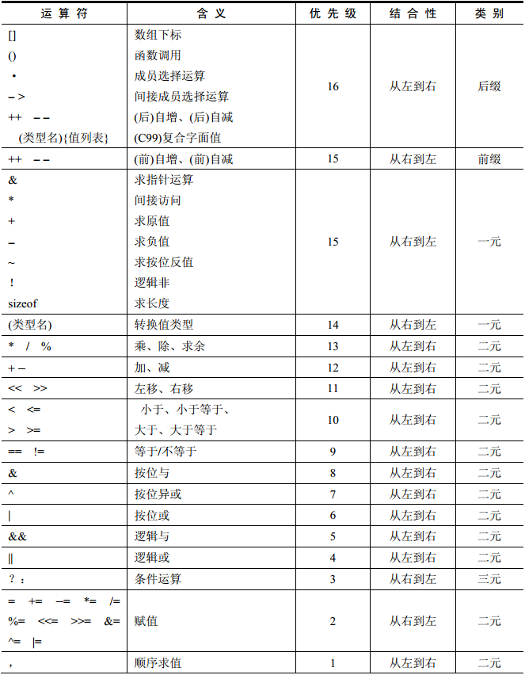

运算符与表达式¶
-
什么是运算符？
- C语言定义的一些运算符号（
+-*/...）；
- C语言定义的一些运算符号（
-
什么是表达式？
- 表达式就是由运算符和操作数组成的一个符合C语法规则的式子序列；
- 单个常量或变量也是一个表达式；
- 根据运算符种类，可分为不同种类的表达式，比如算术表达式
3+5、关系表达式3 > 5...； - 表达式运算后的结果为表达式的值
int i = 1 +1； - 值的类型为表达式的类型；
-
什么是语句？
- 语句可分为简单语句和符合语句，简单语句以
;结束； - 语句是对计算机的指令：声明语句
int a;、赋值a=1、函数调用、结构化语句、空语句、复合语句...；
- 语句可分为简单语句和符合语句，简单语句以
运算符优先级¶
-
什么是优先级？
- 在一个表达式中，优先级高的运算符先选择操作对象
（2+3*4+5）； - 优先级用来确定运算符的操作对象，而不是用来确定运算次序
（2*3+4*5），后者是由编译器去决定的； - C语言优先级一共16级，16级最高，1级最低；
- 在一个表达式中，优先级高的运算符先选择操作对象
-
如何记忆优先级？
单目运算符 --> 算术运算符 --> 关系运算符 --> 逻辑运算符 --> 条件运算符 --> 赋值运算符 --> 逗号顺序求值

运算符结合性¶
-
什么是结合性？
- 结合性就是一串操作符是从做往右依次执行还是从右往左依次执行；
- 当表达式中运算符优先级相同，那么运算符就会根据结合性来挑选操作数；
-
左结合与右结合
- 左边的运算符先挑运算对象，依次向右执行；
- 右边的运算符先挑运算对象，依次向左执行；
- 求值顺序和结合性无关，和编译器有关；
-
右结合型的运算符
- 单目运算符；
- 赋值运算符；
- 条件运算符；
1 + 2 + 3; // (1+2)+3 // 左结合
a = b = c; // a=(b=c) // 右结合
判断输入的年是否是闰年
#include <stdio.h>
#include <stdlib.h>
int main(void)
{
int year;
printf("请输入一个年份：");
scanf("%d", &year);
if( year%4==0 && year%100!=0 || year%400==0)
/*
运算符顺序：
1. 算术运算符(%)
2. 关系运算符(==,!=)
3. 逻辑运算符(&& > ||)
*/
printf("%d是闰年\n", year);
else
printf("%d不是闰年\n", year);
return 0;
}
$ ./hello
请输入一个年份：2000
2000是闰年
$ ./hello
请输入一个年份：1999
1999不是闰年
运算符分类¶
-
C语言提供了48种运算符
- ANSIC：44中种运算符；
- C90增加了一元
+运算符；区分前后缀++/--； - C99增加了一个复合字面值运算符；
-
运算符的分类（根据需要的操作数）
- 单目运算符
- 双目运算符
- 三目运算符
算术运算符¶
基本算术运算符¶
基本运算符
| 运算符 | 描述 |
|---|---|
+ |
取正（+4） |
- |
取负（-4） |
+ |
加 |
- |
减 |
* |
乘 |
/ |
除 |
% |
求余 |
++ |
自增 |
-- |
自减 |
求余运算符¶
- 优先级和乘除相同
- 操作数必须是整数
- 字符型数据也可以求余运算
- 浮点数不能进行求余运算
- 指针也可以进行求余运算
- 负数也可以进行求余运算
#include <stdio.h>
int main(void)
{
printf("%d\n", 10 & 3); // 整数可以进行求余运算
printf("%d\n", -10 & 3); // 整数可以进行求余运算
printf("%d\n", 'a' & 'b'); // 字符可以进行求余运算，字符型在内存中是一个整数进行保存的
// printf("%d\n",10.5 & 3); // 不支持浮点数求余运算
return 0;
}
自增自减运算符¶
- 优先级大于乘除
- 后缀自增、自减
- 前缀自增、自减
#include <stdio.h>
int main(void)
{
int i,j = 0;
printf("%d\n", i++); // 先取值在进行运算 ==> 0
printf("%d\n", i--); // ==> 1
printf("%d\n", ++j); // 先运算在取值 ==> 1
printf("%d\n", --j); // ==> 0
return 0;
}
运算符使用需要注意的地方¶
- C99对新标准的
/和%的修改- C99中
/的结果总是向零取整 - C99中
%的值符号跟被除数相同
- C99中
- 不清楚的地方、复杂的表达式加括号
a+++(++b)与a+++++b
- 避免产生未定义的行为
- (i++)+(i++)+(i++)
赋值运算符¶
左值、右值和数据对象¶
- 数据对象
- 用于保存变量或数组的数据存储区；
- 数据存储区的术语，作用是用来保存数据；
- 左值
- 用于标识一个特定数据对象的名字或表达式；
- 对象指的是实际的数据存储，左值用来表示存储在计算机内存中的对象，左值是一个用来识别或定位这个存储对象的标识符；
- 右值
- 指的是能赋给可修改的左值的量；
- 变量
- 变量即可以当左值，又可以当右值；
- 变量的名字是一个左值，用来标识存储的数据对象；
- 变量的值是一个右值，可以给可修改的左值赋值；
简单赋值运算符与符合赋值运算符¶
- 简单赋值与简单赋值运算符
=
- 复合赋值与复合赋值运算符
+=、-=、*=、/=、%=
- 赋值运算符
复制过程中的类型转换¶
- 浮点型数据复制给整型
- 整型数据赋值给浮点型
- 字符型数据赋值给整型
- 整型数据赋值给字符型
使用赋值运算符需要注意的地方¶
- 赋值运算符的截断问题
#include <stdio.h>
int main(void)
{
int a;
char b;
int c = 1000;
a = b = c;
printf("%d",a);
return 0;
}
$ ./hello
-24
关系运算符¶
用来比较两个数的关系，比如数字1是否比数字2大。。
关系运算符的使用¶
- 关系运算符
- <、<=、>、>=、==、!=
- 关系运算符的优先级
- 较高：<、<=、>、>=
- 较低：==、!=
- 结合性
- 左结合
-
关系表达式
- 由关系运算符将操作数连接而成的式子；
- 表达式的结果是一个整型值，而不是一个布尔值；
- 一般用在
if或while语句中作为条件判断；
-
关系运算符的结合性
a<b<c相当于(a<b)<c>a==b==c用上
逻辑运算符¶
- 与、或、非
- 双目运算符：&&、||，左结合性；
- 单目运算符：!，右结合性；
- 优先级：! > && > ||；
- 逻辑表达式
- 运算符的操作数可以是常量、变量、表达式；
- 表达式的值类型是整型；
- 优先级：! > 算术运算符 > 关系运算符 > && > || > 赋值运算符；
逻辑运算符的运算¶

逻辑运算中的短路求值¶
- &&、||存在序列点
- 左操作数先求值
- 如果操作数能确定整个表达式的值，不再计算右值操作数的值
位逻辑运算符¶
- 实现对位的一些操作
&(与)、|(或)、～(非)、^(异或)、<<(左移)、>>(右移)；- 某位清零、置一、取反、异或、状态查询等操作；
- 位逻辑表达式
- C语言中使用整数来代替逻辑表达式的布尔值；
- C99中可以直接使用布尔类型；
#include <stdio.h>
#define BIT_0 0x01 // 位掩码 // Bitmask
#define BIT_1 0x02
#define BIT_2 0x04
#define BIT_3 0x08
#define BIT_4 0x10
#define BIT_5 0x20
#define BIT_6 0x40
#define BIT_7 0x80
int main(void)
{
int i = 0x01;
int j = 0x0f;
i &= 0x02; // == 0 某一位置一
printf("%x\n", i);
// i |= 0x02; // == 3
// printf("%x\n", i);
j = j & ~0x1;
printf("%x\n", j);
return 0;
}
左移、右移运算符¶
- 属于逻辑移位
- 算术移位与逻辑移位的区别？
- 对移出位进行零填充；
- 移位计数的合法取值范围
- int型数据合法范围是[0,31]
- 位运算存在整数提升
- 当<<左操作数为字符、短整型时，会发生隐式类型转换；
- <<右操作数也要限制在其合法取值范围内；
条件运算符¶
- 基本用法
#include <stdio.h>
int main(void)
{
int i;
// 表达式1?表达式2:表达式3:
i = 2>1 ? 1+2 : 3*4; // 如果2大于1，则把1+2的执行结果赋值给i,否则把3*4的执行结果赋值给i;
printf("%d", i);
return 0;
}
#include <stdio.h>
int main(void)
{
int a=3, b=4, c=5;
int max = 0;
max = (a < b ? b : a) < c ? c : a; // 获取ABC中的最大值
printf("%d",max);
return 0;
}
逗号运算符¶
- 表达式1,表达式2,...,表达式n；
- 最后一个表达式的值是作为整个逗号表达式的值；
- 逗号表达式的优先级最低（优先级可以加括号）；
#include <stdio.h>
int main(void)
{
int i, j;
i = 1,2,3+4,5*6,7/8,9%3;
j = (1,2,3+4,5*6,7/8,9%3);
printf("%d\n", i); // 1
printf("%d\n", j); // 0
return 0;
}
一些优先级¶
.的优先级高于*；.的优先级高于++；[]的优先级高于*；- 函数
()的优先级高于*； ==和!=高于位操作；- ==和!=高于赋值运算符；
- 算术运算符高于位移运算符；
- 逗号运算符最低；